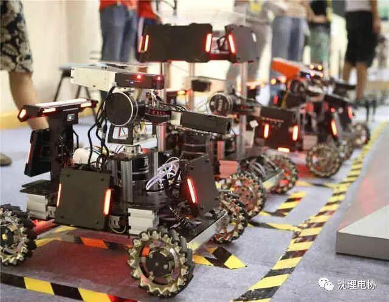
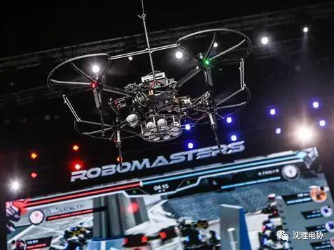
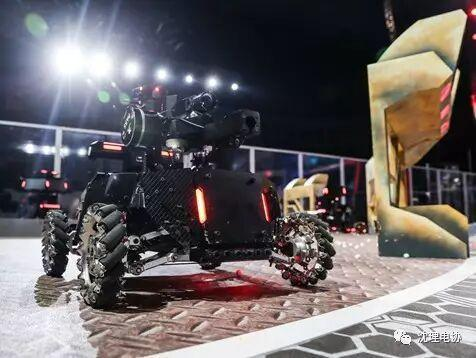
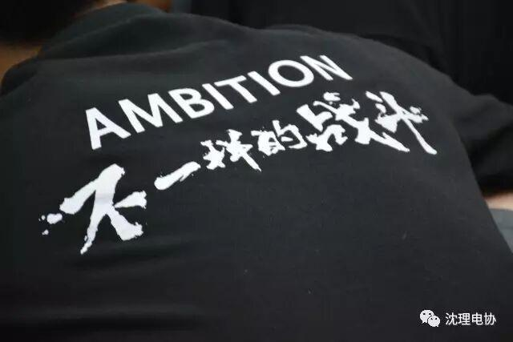
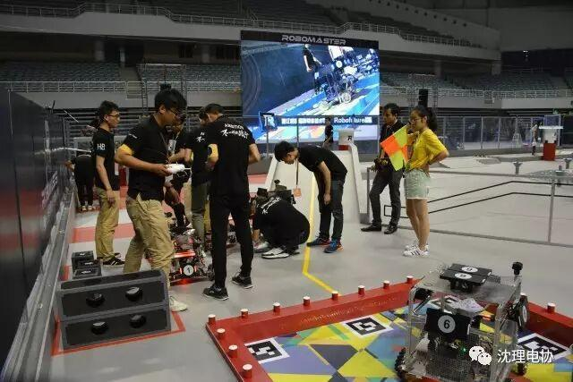
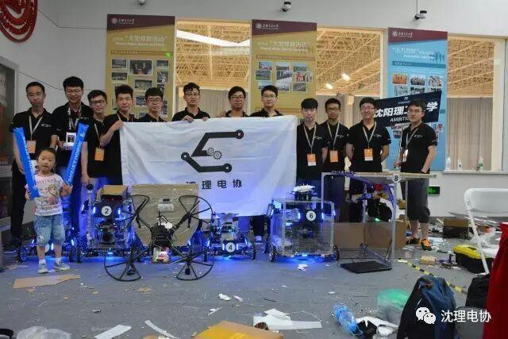
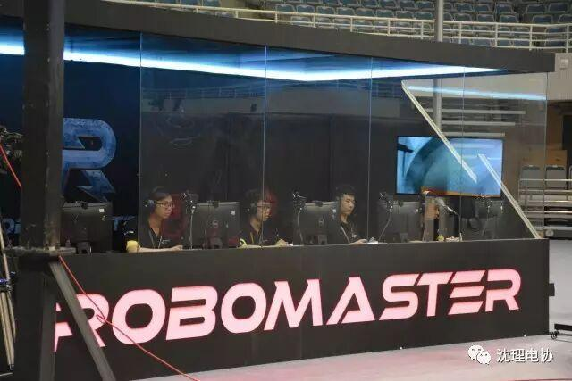
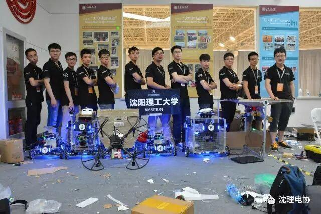
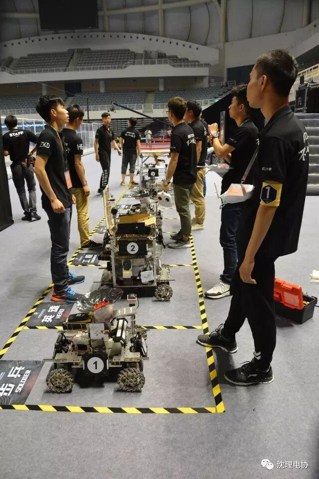

虽败犹荣！
RoboMasters全国大学生机器人大赛是由共青团中央、全国学联、深圳市人民政府联合主办的赛事，是中国最具影响力的机器人项目，是全球独创的机器人竞技平台，包含机器人赛事、机器人生态、以及工程文化等多项内容，正在全球范围内掀起一场机器人科技狂潮。



在近期举办的RoboMaster 2017机甲大师赛（东部赛区）中，我校代表队AMBITION战队在小组赛中由于经验不足，准备时间有限等原因不敌浙江纺织服装职业技术学院的Robofuture战队，输掉了比赛。

这是我校第一次参加RoboMasters大赛，虽然没有取得好的名次，但是我们的战队拼尽了全力，做出了优秀的机器人，也为明年参加大赛的选手们积累了宝贵的经验。
15天，两辆车，三台机器人，已经创造了奇迹。无论结果怎样，就凭这参赛的奇迹，你们就是我们的英雄，沈理的英雄，真正的英雄!你们，虽败犹荣！
最后，附上AMBITION战队本次比赛的照片和比赛视频的下载地址。同学们，让我们为英雄们呱唧呱唧！





比赛视频下载地址：http://pan.baidu.com/s/1b5f0MM

编辑：信息部 康宁

哇！这么好的公众号还不赶紧关注?